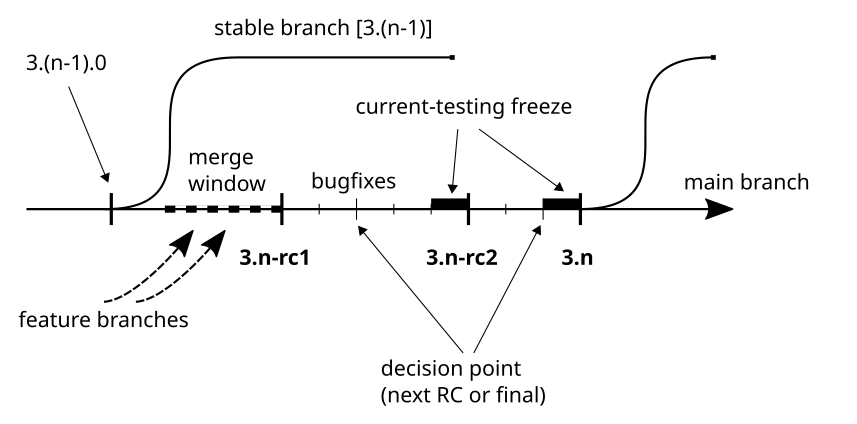

版本方案
Qubes OS 專案使用語意化版本控制標準。版本號碼寫為 <major>.<minor>.<patch>。當省略 <patch>（例如 4.1）時，通常是因為 <patch> 為零（如 4.1.0），或者因為我們指的是某個特定的次要版本，而不考慮其中的任何特定補釘發行版。同樣地，單獨的主要版本號碼（例如 R4）有時用於指包含其中所有次要和補釘發行版的整個版本系列。
一般來說，補釘發行版用於向後相容的臭蟲修復，次要版本用於向後相容的增強功能和新功能，主要版本用於任何向後不相容的變更。這意味著，一般來說，不應在補釘發行版中引入功能或增強功能，也不應在修補或次要版本中引入任何向後不相容的變更。（模板是一個明顯的例外，因為上游作業系統幾乎總是有自己的發行時程。）所有版本都允許臭蟲修復，所有主要和次要版本都允許向後相容的變更。
Qubes OS 次要版本通常包含新功能、新模板，有時還有新的預設值，但它們仍然是向後相容的，因為在先前的版本中可用的 qube 和功能仍然可以運作，儘管 UI 在某些情況下可能不同。一般來說，已棄用的功能僅在主要版本中移除，並且不保證主要版本之間的就地升級。
遵循標準慣例，version 指任何被賦予版本名稱或編號的建置，例如 3.2-rc2、4.0.4、4.1-beta1。相比之下，release 指任何預期供一般用戶群使用的版本。例如，4.0.4 既是 version 也是 release，因為它是穩定的且預期供大眾使用，而 4.1-beta1 是 version 但不是 release，因為它不穩定且僅供測試使用。所有發行版（release）都是版本（version），但並非所有版本（version）都是發行版（release）。
字母 R，如 R4.1，代表發行版。縮寫 RC，如 3.2-rc2，代表發行候選版。
Qubes 散佈版與產品
我們希望讓製作 Qubes 的重混版變得容易，可針對其他虛擬機器管理程式或隔離提供者。我們也可能建立針對特定情況的商業產品。有一個著名的發行版稱為 Qubes OS。其所有原始碼均可根據 免費和開源授權 下載，並在 GitHub 和我們的 郵件列表 上公開開發。本文檔的其餘部分討論的是 Qubes OS。其他重混版可能有自己的版本系列。
發行版本控制
Qubes OS 整體會不定期發行。在準備新版本時，我們會決定 <major>.<minor> 號碼（例如 3.0，即 3.0.0 的縮寫）。然後我們發佈第一個發行候選版，例如 3.0.0-rc1。當我們認為取得了足夠的進展時，我們會發佈 3.0.0-rc2，依此類推。所有這些版本（尚未發行）都被認為是不穩定的，不適用於生產環境。歡迎您幫助我們測試這些版本。
當取得足夠進展時，我們會宣布第一個穩定版本，例如 3.0.0。這不僅是一個版本，而且是一個實際的發行版。它被認為是穩定的，我們承諾根據我們的 支援時程 對其提供支援。核心組件在此時建立分支，臭蟲修復從主分支反向移植。請參閱 協助、支援、郵件列表與論壇 以了解提問的地方。此版本不應包含主要功能或介面不相容的內容。我們以補釘發行版（3.0.1、3.0.2 等）發行臭蟲修復，而向後相容的增強功能和新功能則在下一g主要發行版中引入。
請參見議題追蹤以了解議題追蹤器中如何處理發行版。
發行時程政策
除了一般路線圖外，沒有具體的發行時程。時機到來時，我們會宣布功能凍結，標記 -rc1，並發行 ISO。從此時起，不再接受新功能，我們的時程開始。
每個發行候選版期間如下：
在前兩週，我們接受並分配臭蟲報告，以便在下一個發行候選版之前修復。
在接下來的兩週，我們通常專注於修復已分配的臭蟲報告，因此在此期間發現的問題可能會推遲到之後的 RC。
最後，有一週的 current-testing 凍結期，在此期間不會發行新軟體包，以期它們能被更廣泛的用戶群安裝和測試。
階段 |
持續時間 |
|---|---|
初始測試 |
兩週 |
臭蟲修復 |
兩週 |
|
一週 |
下一個 RC 通常在前一個之後五週發行。所有軟體包都發佈在 current 儲存庫中，然後週期重新開始。在最終發行版之前，應始終至少有一個發行候選版。
從第二個週期開始（即在 -rc1 之後），在週期開始兩週後（在主要臭蟲報告期之後），我們決定是否應該有另一個 RC。如果根據已回報的臭蟲，我們決定將最新的 RC 指定為穩定版本，那麼我們會決定其發行日期，該日期應不超過一週後。
要查看實際範例，請參閱 Qubes R4.1 發行時程。

臭蟲優先級
在決定當前發行候選版是否為最終版本時，委員會會考慮臭蟲的 優先級。它們的含義如下：
blocker— 當當前發行候選版中存在任何此類臭蟲時，它就不能被視為最終版本。具有此優先級的臭蟲必須在下一個發行候選版之前修復，即使這意味著延遲其發行（這應被視為最後手段）。critical— 當當前發行候選版中存在任何此類臭蟲時，它就不能被視為最終版本。但此類臭蟲不足以延遲下一個發行候選版的發行。major— 此類臭蟲的存在並不嚴格阻止當前發行候選版被視為最終版本（但我們當然應盡力不讓它們存在）。修復此優先級的臭蟲可以延遲，並作為最終穩定版本的更新。default和minor— 此類臭蟲的存在並不阻止當前發行候選版被視為最終版本。修復此類臭蟲可以推遲到下一個 Qubes OS 版本。最終這些修復可能會被反向移植為穩定版本的更新。（default實際上應被分配更具體的優先級，但實際上問題太多、時間不夠，所以default最終停留在許多問題上。）
以上所有內容都是關於臭蟲的，在第一次 -rc 之後，不應將任何功能分配給當前版本。最高委員會可以自由地適當調整優先級。
組件版本
Qubes 版本由組件的特定版本定義，這些組件或多或少是獨立開發的。它們的版本由目標 Qubes OS 版本的主要和次要版本號組成，後接僅遞增的第三個組件。沒有明顯的標示表明給定版本是否穩定。
有一些非必要組件（如 qubes-apps-*）在版本之間共享。它們的版本表示支援的最舊 qubes-release。我們努力透過一個分支支援多個版本，以簡化程式碼維護。
不同的 Qubes 版本重混版可能包含不同的組件，並且不保證版本在版本之間是單調遞增的。我們可能會決定，對於較新的版本，某些組件應降級。無法保證隨機組件的不同版本的任意組合會產生可用的（甚至可安裝的）編譯。
檢查已安裝的版本
如果您想知道您執行的版本，例如要回報問題，您可以在 Qubes Manager 選單的 About > Qubes OS 中檢查，或在 dom0 的 /etc/qubes-release 檔案中檢查。對於後者，您可以在 dom0 終端機中使用 cat /etc/qubes-release 之類的命令。